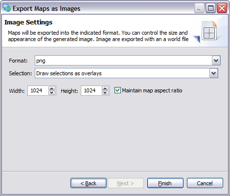

This wizard allows you to export a map as a world plus image format. The images will be added to the
catalog when the wizard is completed.
Map Selection Page
The initial Map Selection page indicates which maps will be exported.
Export Directory
Directory in which the images will be saved.
Selected Maps
List of maps available selected for export.
- Name: Name of map being exported; this will be used as the image filename
- Scale: You can change the scale the map will be exported in, the default value is the scale of
the map on screen.
Add
Used to add an additional Map to the selected map list. Press this button will open a Map
Selector allowing you to explore the open projects and select one more more maps.
Remove
Remove a map from the list.
Reset Scale
Reset scale to the value currently displayed on screen.
Image Settings Page
This page is used to define the image file to be exported.

Selection
Allows you to choose how to render any selected features on the current map:
- Draw selections as overlays - selections are drawn over top of existing map content, in
appearance this is similar to the Map Editor
- Only draw selections - allows you to quickly make an image of just the features you have selected
- Draw selections when available
- Ignore selections
Height
Height of the resulting image.
Width
Width of the resulting image.
Maintain map aspect ratio
- checked: Map will appear in the same proportions as it does on the screen. Additional content may
be shown around in order to generate an image of the requested size.
- unchecked: Map will be distorted into the request image size
PDF Parameters
Support for generating an Adobe PDF document has been added as an experimental option. When
generating a PDF document the size of paper selected is used to determine the output resolution.
The following additional parameters are available when exporting to PDF.
Paper Size
Metric an imperial paper sizes are available.
| LETTER |
8.5 inches by 11 inches |
| LEGAL |
8.5 inches by 14 inches |
| A0 |
841 mm by 1189 mm |
| A1 |
594 mm by 841 mm |
| A2 |
420 mm by 594 mm |
| A3 |
297 mm by 420 |
| A4 |
210 mm by 297 mm |
Landscape
Determine paper orientation.


{kind=link}